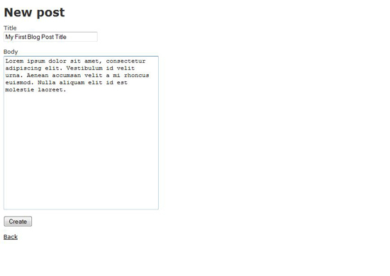
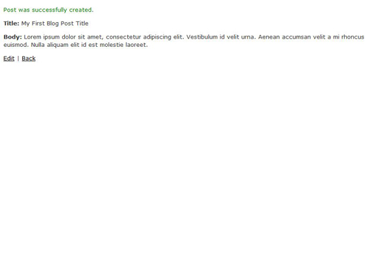
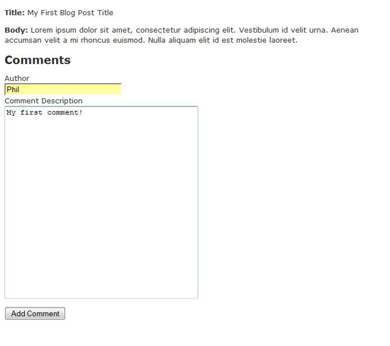
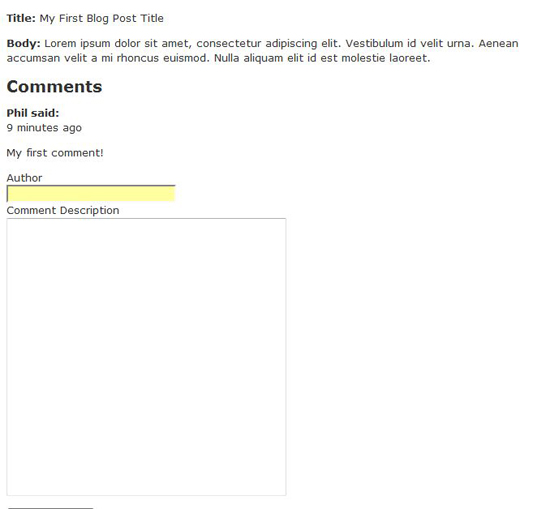

Перший запуск
Далі запустимо Webrick - вбудований в Rails веб сервер, і подивимось, як все виглядає. Пишемо команду
> rails s
Переходимо на http://localhost:3000/posts у вашому улюбленому браузері і побачимо наступну сторінку. За замовчуванням цей шлях передасть контроль над запитом в index метод кoнтроллеру posts_controller.rb, який відрендерить index.html.erb відображення.
Коли ми клікаємо на посилання New Post, ми перейдемо на сторінку http://localhost:3000/posts/new, де ми побачимо форму для створення нового поста. Перехід на цей шлях обробляється методом new в posts_controller.rb, який відрендерить new.html.erb відображення.

Натискаємо кнопку Create для того, щоб зберегти запис, нас перенаправить на сторінку http://localhost:3000/posts/show/1. На ній ми побачимо інформацію про запис. Цей запит викликає show метод в posts_controller.rb. Він також приймає параметр 1 в метод show. В кінці цей метод рендерить відображення show.html.erb

Налаштування домашньої сторінки
Ви, ймовірно, хочете, щоб кореневий URL (http://localhost:3000) направляла користувача на головну сторінку ваших записів, фактично роблячи це вашою домашньою сторінкою. Для цього спочатку потрібно видалити public/index.html файл.
Друге, що ви повинні зробити, це створити роут в конфігураційному файлі routes.rb. Відкрийте цей файл у блокноті (або у вашому улюбленому редакторі) і додайте новий рядок в кінці, використовуючи map.root, як показано нижче.
ActionController::Routing::Routes.draw do |map|
map.resources :comments
map.resources :posts
map.connect ':controller/:action/:id'
map.connect ':controller/:action/:id.:format'
map.root :controller => "post"
end
Заваження: Цей файл роутів має очищений від коментарів для ясності і стислості. Більш детальну інформацію про роути спробуйте знайти в документації по API Rails.
Дозволяємо користувачам залишати коментарі
Змінимо роути
Перед тим, як робити будь-які зміни в файл відображення, нам потрібно створити скоуп comments в роуті posts. Для цього слід модифікувати файл route.rb наступним чином.
ActionController::Routing::Routes.draw do |map|
map.resources :posts, :has_many => :comments
map.connect ':controller/:action/:id'
map.connect ':controller/:action/:id.:format'
map.root :controller => "post"
end
Змінимо відображення
Тепер змінимо views/posts/show.html.erb на код, вказаний нижче. Тут ми рендеримо пост і показуємо будь-які коментарі до нього та відображаємо форму додавання нового коментаря.
<p>
<b>Title:</b>
<%=h @post.title %>
</p>
<p>
<b>Body:</b>
<%=h @post.body %>
</p>
<h2>Comments</h2>
<% @post.comments.each do |c| %>
<p>
<b><%=h c.name %> said:</b><br />
<%= time_ago_in_words(c.created_at) %> ago
</p>
<p>
<%=h c.body %>
</p>
<% end %>
<% form_for [@post, Comment.new] do |f| %>
<p>
<%= f.label :name, "Author" %><br />
<%= f.text_field :name %><br />
<%= f.label :body, "Comment Description" %><br />
<%= f.text_area :body %>
</p>
<p>
<%= f.submit "Add Comment" %>
</p>
<% end %>
Модифікуємо контроллер коментарів
Видалимо всі методи, які були створені автоматично у файлі comments_controller.rb, так як вони не потрібні для нашого веб-додатку. Додамо один новий метод create, як показано в коді нижче. Він просто створює обʼєкт коментаря, який належить даному посту, та зберігає його у таблицю comments.
class CommentsController < ApplicationController
def create
@post = Post.find(params[:post_id])
@comment = @post.comments.create!(params[:comment])
redirect_to @post
end
end
Перезавантаже браузер(впевніться, що ваш сервер досі працює в командному рядку). Ви побачите щось схоже на це.

Зараз ви можете спробувати додати комента. Введіть текст коментаря та клікніть на копку Add Comment. Новий коментар має зʼявитись під постом як на малюнку нижче.

Висновки
Що ми вивчили
Ми вивчили основні концепції, що лежать в основі розробки додатків і застосували наші навички в робочому веб-додатку на Rails. Мати, принаймні, базове розуміння дизайну додатків важливе при вивченні Rails –це ключ до успіху.
Як ми можемо вдосконалити блог
В цьому уроці було покрито достатньо для відправки повідомлень. Є багато речей, які ви могли б зробити, щоб поліпшити стан речей. Додайте CSS або використовуйте AJAX для того, щоб змусити все працювати гарніше, і це лише кілька пропозицій.
Що далі
Далі спробуйте розібратись с MVC так, щоб ви дійно розуміли концепції, що за ним лежать. Спробуйте зрозуміти переваги Rails і MVC – це вмотивую вас вчити фреймворк далі. Однак читання теорії без практики не є достатнім, і ви маєте вдосталь погратись з фреймворком.